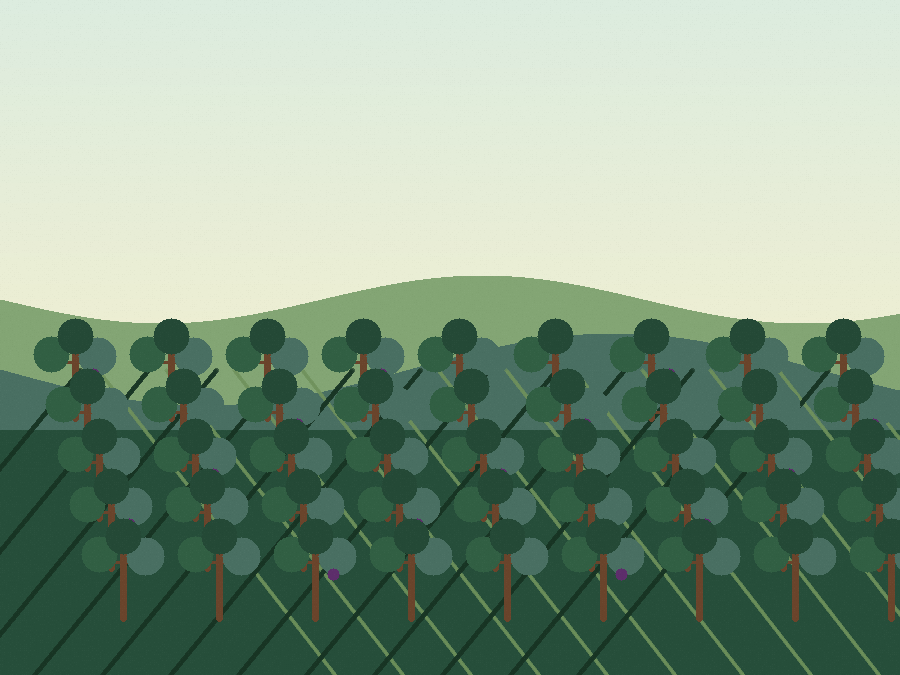

Природно и чисто
Без додадена вода, шеќер или конзерванси, за чист вкус на јаболко.
Овошје од насад. Занает во визба. Сезонски серии.
Јаболков сајдер, природно одлежан оцет и лозарско производство засновани на внимателна берба, чиста ферментација и трпелива визбена работа.
Без додадена вода, шеќер или конзерванси, за чист вкус на јаболко.
Произведено од домашно одгледани јаболка од сопствен насад.
Пакување во 0,5 L, 0,72 L и 1 L стаклени шишиња.
Што произведуваме
Секоја линија го следи истиот практичен ритам: внимателна берба, чиста преработка, трпелива ферментација и јасно следење на сериите од почеток до крај.

Јаболков сајдер
Направен за освежително пиење, дегустации и сезонско послужување. Линијата за сајдер се фокусира на изразено овошје, урамнотежена киселост и чиста ферментација од цедење до шише.

Јаболков оцет
Линија оцет за салати, маринади, туршија и готвачи што ја ценат ферментацијата. Трпеливото одлежување му дава заоблен јаболков карактер и жив завршеток.

Лозарско производство
Јасен простор за лозарски активности: резидба, потпорна конструкција, зелена работа, планирање на берба и премин од работа на поле кон визбено производство.
Како работиме
Овошјето и грозјето се берат кога шеќерот, киселоста, аромата и текстурата се во рамнотежа.
Се добива чист сок преку внимателно миење, мелење, цедење и првично филтрирање.
Малите серии се следат низ контролирана ферментација, одлежување и природен развој на киселини.
Готовите серии се полнат за дегустации, локална продажба и идни разговори за соработка.
Контакт
Испратете порака за достапност на сајдер, нарачки за оцет, сезонски дегустации или соработка во лозарско производство.